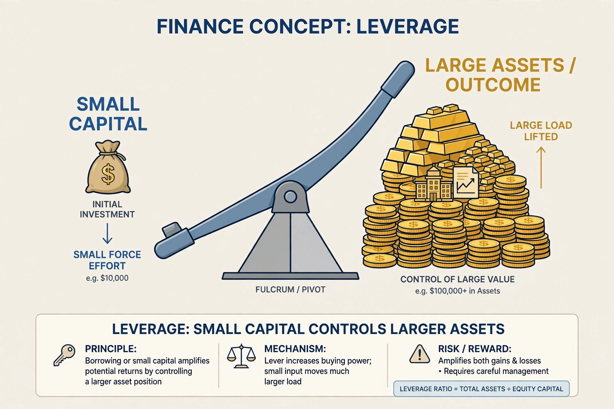

In finance, leverage is any technique involving borrowing funds to buy an investment, estimating that future profits will be more than the cost of borrowing. It magnifies both gains and losses relative to the investor's own capital.

Financial leverage arises from debt in a firm's capital structure, measured by ratios such as debt-to-equity. Operating leverage comes from fixed costs. Derivatives such as options, futures and margin accounts create embedded leverage without explicit borrowing.
Excess leverage contributed to the 2007–08 financial crisis, as institutions leveraged 30-to-1 or more faced margin calls and forced sales. Basel III introduced a leverage ratio for banks. Leveraged buyouts use debt secured on a target company's assets. See Debt, Leveraged buyout and Margin.